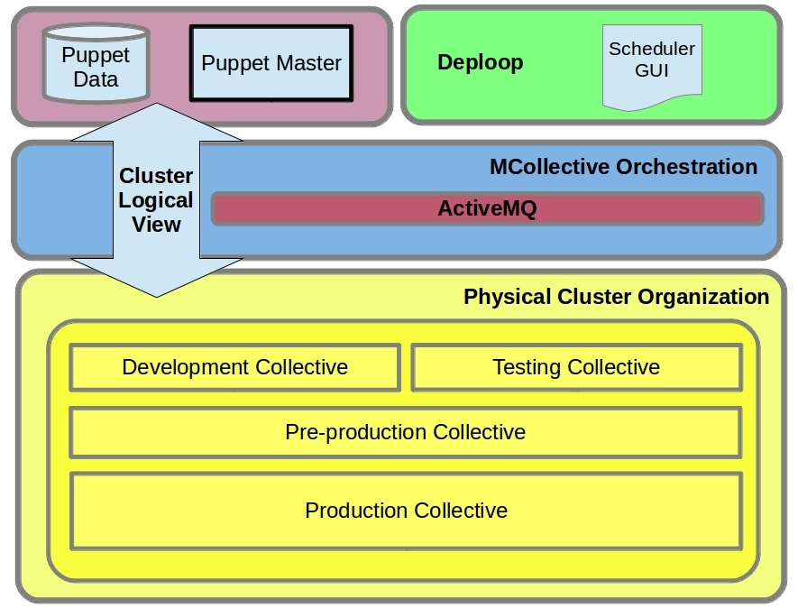
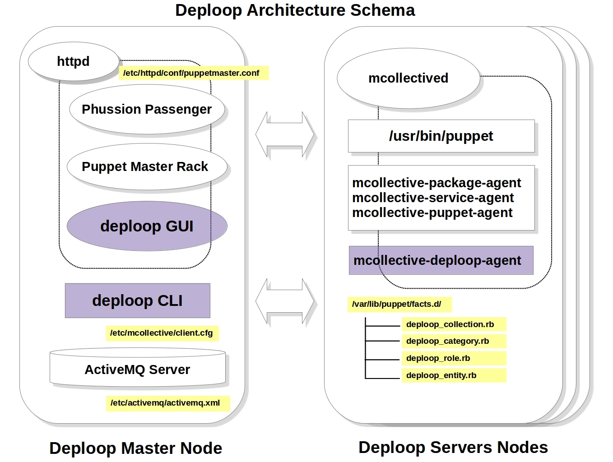
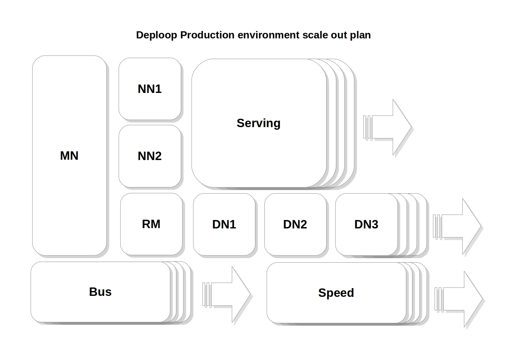

The Deploop Project
Deploop is a tool for provisioning, managing and monitoring Apache Hadoop clusters focused in the Lambda Architecture. LA is a generic design based on the concepts of Twitter engineer Nathan Marz. This generic architecture was designed addressing common requirements for big data.
LA has three major components:
- Batch layer: which functionality is managing the master dataset, which is an append-only set of raw data , and handle pre-computing arbitrary query functions, called batch views.
- Serving layer: indexes the batch views so that they can be queried in ad hoc with low latency.
- Speed layer: accommodates all requests that are subject to low latency requirements. Using fast and incremental algorithms, the speed layer deals with recent data only.
Deploop tool is designed for LA deployments in production environments, therefore Deploop system makes decissions for the user in order to fulfil the best practices for real production environments.
Deploop Source Code Components
Deploop system is based on three software components:
- The Deploop engine: This is a Ruby application used for take the control of the cluster layers. With this command line tools, you can bootstrap a new cluster layer (batch layer, speed layer, serving layer), query the layer, start, stop o whatever.
- The Deploop Puppet Enviroments Catalog: The configurations of these complex architectures are handle by means of Puppet, a set of Puppet recipes are the core of the architecture.
- The Deploop Mcollective Agent: The orchestration engine Marionette Collective is the other core component in the Deploop architecture. The cluster operations are handle by means of this components and by means of a special MCollective agent: mcollective-deploop-agent plugin.
- The Deploop GUI: This is a Ruby on Rails application in development, it's a front end of the CLI engine.
Deploop Architecture



Development State
What can I do with Deploop right now?
You can deploy from scratch a full Hadoop cluster (batch layer) with only one command like this:
- deploop -f conf/cluster.json --deploy batch
You can Shutdown or Startup the Hadoop cluster (batch layer) with a command like this:
- deploop --layer batch --stop
- deploop --layer batch --stop
You can Enable or Disable Kerberos (Hadoop Security) with a single command:
- deploop --layer batch --kerberos
- deploop --layer batch --nokerberos